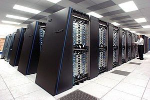
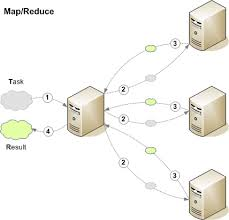
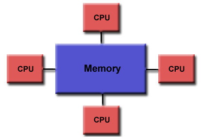
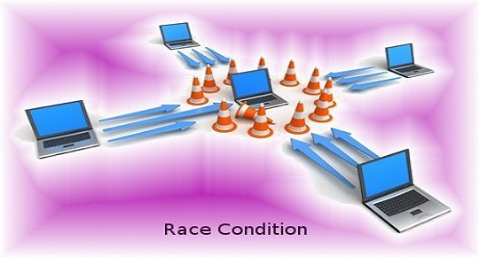
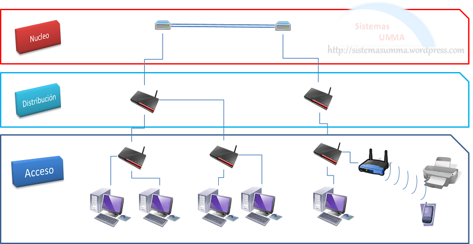

4.1 Aspectos básicos de la computación paralela
 La computación paralela se basa en la idea de dividir un problema en tareas más pequeñas y
procesarlas de
manera simultánea utilizando múltiples recursos de computación. Esto permite un procesamiento más
rápido y
eficiente en comparación con los enfoques secuenciales tradicionales. Algunos aspectos fundamentales
de la
computación paralela incluyen la sincronización de tareas, la comunicación entre procesos y la
gestión de
recursos.
La computación paralela se basa en la idea de dividir un problema en tareas más pequeñas y
procesarlas de
manera simultánea utilizando múltiples recursos de computación. Esto permite un procesamiento más
rápido y
eficiente en comparación con los enfoques secuenciales tradicionales. Algunos aspectos fundamentales
de la
computación paralela incluyen la sincronización de tareas, la comunicación entre procesos y la
gestión de
recursos.
4.2 Tipos de computación paralela

Existen varios tipos de computación paralela que se utilizan en diferentes contextos y escenarios.
Algunos de
los enfoques más comunes incluyen el procesamiento paralelo a nivel de bit, a nivel de instrucción,
a nivel de
datos y a nivel de tarea. Estos enfoques se diferencian en cómo se dividen y procesan las tareas y
los datos.
4.2.1 Clasificación

La clasificación de la computación paralela puede realizarse en función de la forma en que se
dividen las
tareas y los datos, así como de la forma en que se coordinan y comunican los procesos paralelos.
Algunas
clasificaciones comunes incluyen la computación paralela a nivel de bit, a nivel de instrucción, a
nivel de
datos y a nivel de tarea.
4.2.2 Arquitectura de computadores secuenciales
 La arquitectura de computadores secuencial se refiere a los sistemas informáticos tradicionales en
los que las
instrucciones se ejecutan una tras otra en secuencia. Este tipo de arquitectura sigue siendo común
en muchas
computadoras personales y estaciones de trabajo.
La arquitectura de computadores secuencial se refiere a los sistemas informáticos tradicionales en
los que las
instrucciones se ejecutan una tras otra en secuencia. Este tipo de arquitectura sigue siendo común
en muchas
computadoras personales y estaciones de trabajo.
4.2.3 Organización de direcciones de memoria

La organización de direcciones de memoria se refiere a cómo se asignan y acceden a las direcciones
de memoria
en un sistema de computación paralela. Esto incluye consideraciones como la memoria compartida, la
memoria
distribuida y las técnicas de direccionamiento utilizadas para acceder a los datos en paralelo.
4.3 Sistema de memoria compartida
Los sistemas de memoria compartida son un enfoque de computación paralela en el que múltiples
procesadores
acceden a una misma área de memoria compartida. Esto permite a los procesadores compartir datos y
comunicarse
de manera eficiente. Dentro de los sistemas de memoria compartida, existen dos tipos principales de
redes: las
redes de medio compartida y las redes conmutadas.
4.3.1.1 Redes de medio compartida

Las redes de medio compartida son un tipo de arquitectura de memoria compartida en la que los
procesadores se
conectan físicamente a un bus compartido o a una red de interconexión. Los procesadores pueden leer
y escribir
en la memoria compartida a través de este medio compartido.
4.3.1.2 Redes conmutadas

Las redes conmutadas, por otro lado, utilizan interruptores o conmutadores para establecer
conexiones entre
los procesadores y la memoria compartida. Estas redes ofrecen una mayor escalabilidad y capacidad de
comunicación en comparación con las redes de medio compartida.
4.4 Sistemas de memoria construida
Los sistemas de memoria construida son una forma de organización de la memoria en la computación
paralela en
la que cada procesador tiene su propia memoria local. Esto permite una mayor independencia entre los
procesadores y reduce la necesidad de acceder a una memoria compartida.
4.5 Casos de estudio
En el campo de la computación paralela, existen numerosos casos de estudio que han demostrado la
eficacia y
los beneficios de los enfoques paralelos en diferentes dominios. Algunos ejemplos incluyen el uso de
computación paralela en simulaciones científicas, análisis de grandes conjuntos de datos,
renderizado de
gráficos y modelado de sistemas complejos.